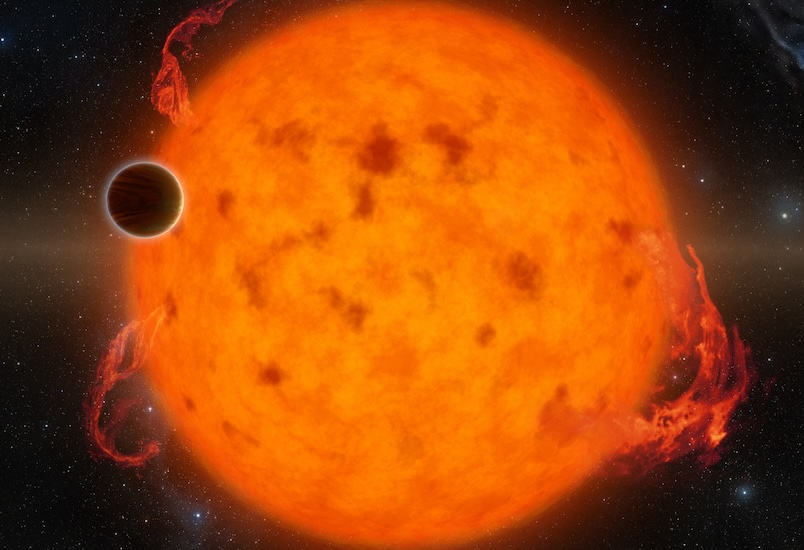

Andrew Mann
Research Highlights
Recently published results from the Young Worlds Lab
IRAS 04125+2902b (aka TIDYE-1b)
A 3 million year old star with a transiting giant planet and a misaligned protoplanetary disk.
The featherweight giant
JWST reveals a young giant planet is an ultra low-density super-Earth.
TOI-1224b and MELANGE-5
A new pair of young planets and a previously missed young association.

Stellar ages from Gaia variability
Using our EVA code to association ages from Gaia photometry.
Lithium depletion in stellar associations
Precision ages of nearby associations from their lithium content.
Finding unseen stellar companions
How sure are you that there's no other star hiding there? We have a code for that.